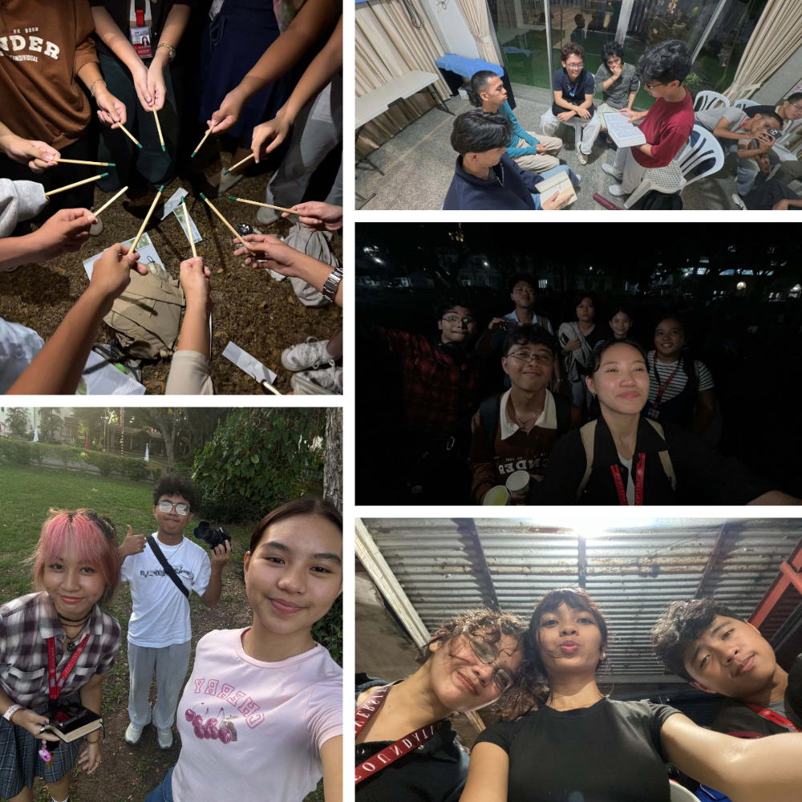

Karl Niño L. Salapa
Whole Person
Education
My online journal across Church, Classroom, Community, Court, and Culture.
GE 10A (2018) - D, BSIT - 1
About this journal
I am a first-year BSIT student at Silliman University who is eager to learn, grow, and explore new experiences. Through Whole Person Education, I hope to develop not only academically but also socially, emotionally, and spiritually. I want to become more confident, build meaningful relationships, discover new interests, and learn valuable lessons that I can apply in my daily life. Ultimately, I hope WPE will help me become a better version of myself and prepare me for the challenges of college and beyond.
To complete WPE, I need at least 40 points, with 8 points from each of the five categories. Every entry in this journal has a reflection and photos as evidence of my participation.
40
points needed in total8
points needed per category55
points earned in this journal31
events in this journalThe five categories
Church
5 events 9 points Worship, faith, and service.Classroom
7 events 13 points Learning beyond the lecture.Community
5 events 10 points Serving and showing up for others.Court
4 events 10 points Sports, teamwork, and discipline.Culture
10 events 13 points Arts, heritage, and creative expression.Journal snapshots
